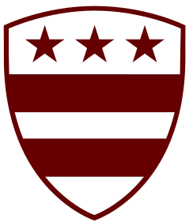
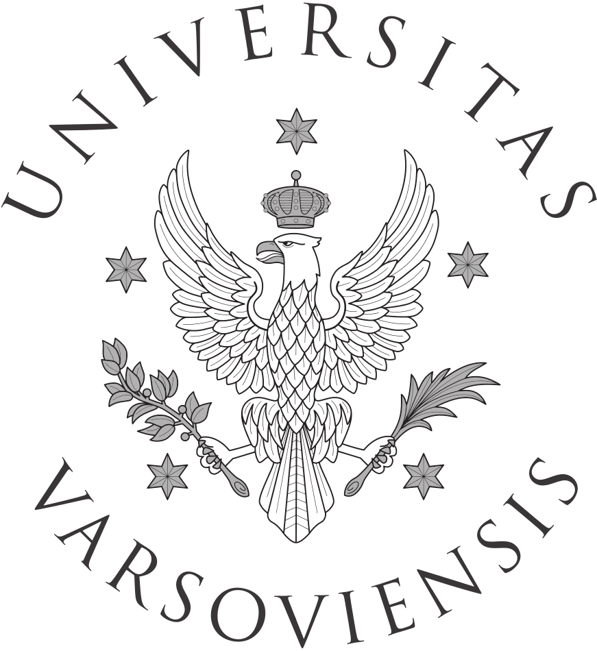
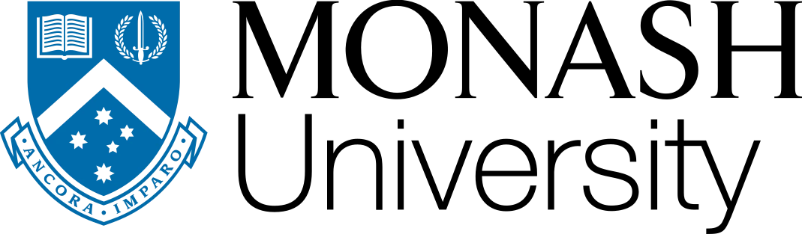
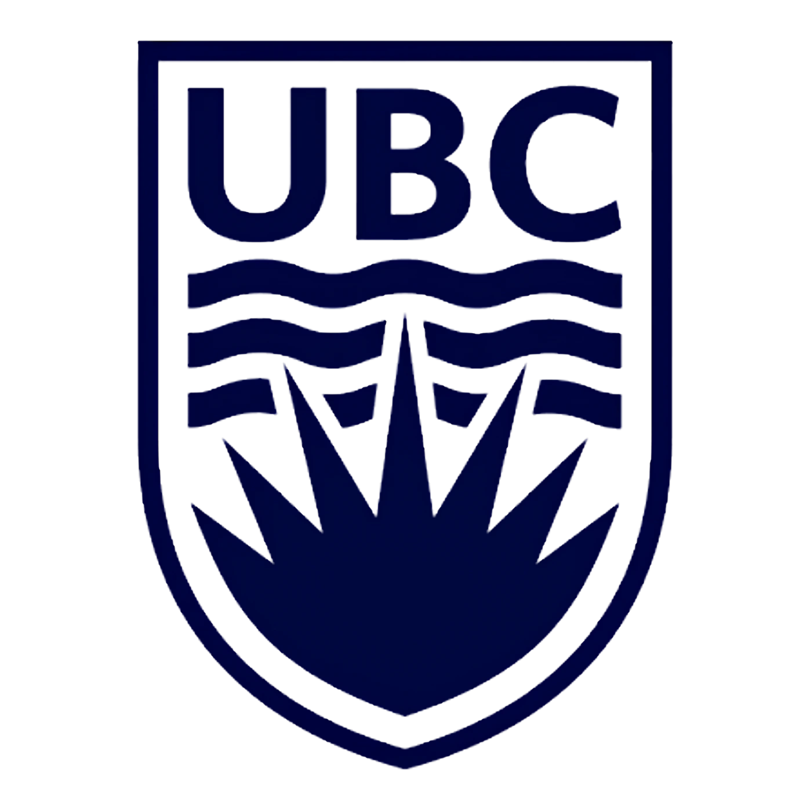
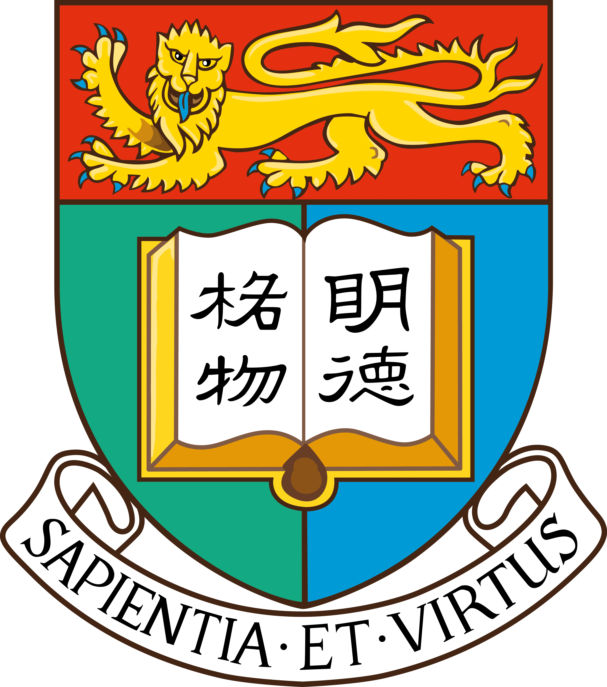
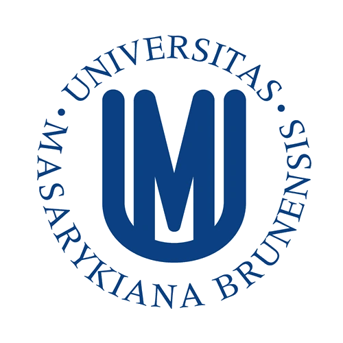
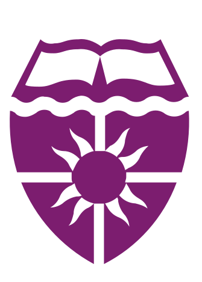
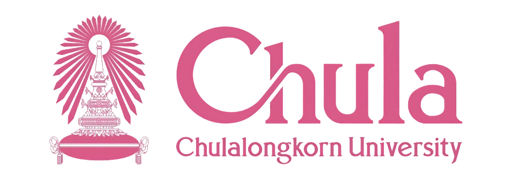

Try ချိတ်နဲ့တိုင်ပင် Now!

Kyaw Myo Naing (Reynolds)
ADVISOR & COO
Introducing Ko Kyaw Myo Naing, our committed advisor who is
prepared to guide you via your academic path. In addition to
his positions as COO and former Head of Research at Chate -
The Hook, he has a strong background in strategic
application planning and profile building, with an academic
focus on Education Studies from Washington College,
Maryland's Premier Liberal Arts College.
He is uniquely qualified to provide you with the tailored
support you require to realise your greatest
potential.
To read more about Ko Kyaw Myo Naing's profile, please click



Yee Mon Thet (Yveria)
ADVISOR
Meet Yee Mon Thet (Yveria), a superb advisor committed to
assisting you in realising your ideal academic objectives.
She has an excellent academic background and is currently a
Vice Chancellor's ASEAN Awards Scholar studying Biomedical
Science at Monash University Australia.
She has an AP Capstone Diploma, 11 AP classes with 4s and
5s. She is here to help you succeed academically.
To read more about Yee Mon Thet's profile, please click


Shwe Eain Linn
ADVISOR & HEAD OF RESEARCH
Meet our advisor, Ma Shwe Eain Linn, who is prepared to
guide you through your international academic journey. She
has a stellar record of being accepted to prestigious
universities in Canada, Hong Kong, and Germany as a UWC
Davis Scholar starting a joint study program in American
College of Norway with Concordia College (Moorhead) where
she will major in Business Administration and Management.
She provides insightful perspectives from around the
world to her advising sessions because of her leadership
experience at Chate - The Hook.
To read more about Shwe Eain Linn's profile, please click



Yoon Ei Ko Ko
ADVISOR
Meet Ma Yoon Ei Ko Ko, our committed advisor, who is
prepared to assist you in realising your goals of pursuing
higher education. She has successfully obtained an
All-Inclusive Full Ride offer in the USA and university
acceptances in Japan, Germany, and Macau as a UWC Full Ride
Scholar getting ready to study International Relations at
Masaryk University.
She is here to help you succeed because of her vast
experience.
To read more about Yoon Ei Ko Ko's profile, please click



Win Htut Aung (Nolan)
ADVISOR
Introducing Ko Win Htut Aung (Nolan), our advisor committed
to assisting you in reaching your academic objectives. He is
currently receiving a Full Tuition Scholarship to study
Chemical and Process Engineering at the top-ranked
Chulalongkorn University in Thailand.
As the former Chief of Asia at the Globalised Department,
he brings outstanding regional expertise, academic
excellence, and valuable leadership experience to help you
realise your full potential.
To read more about Win Htut Aung's profile, please click
